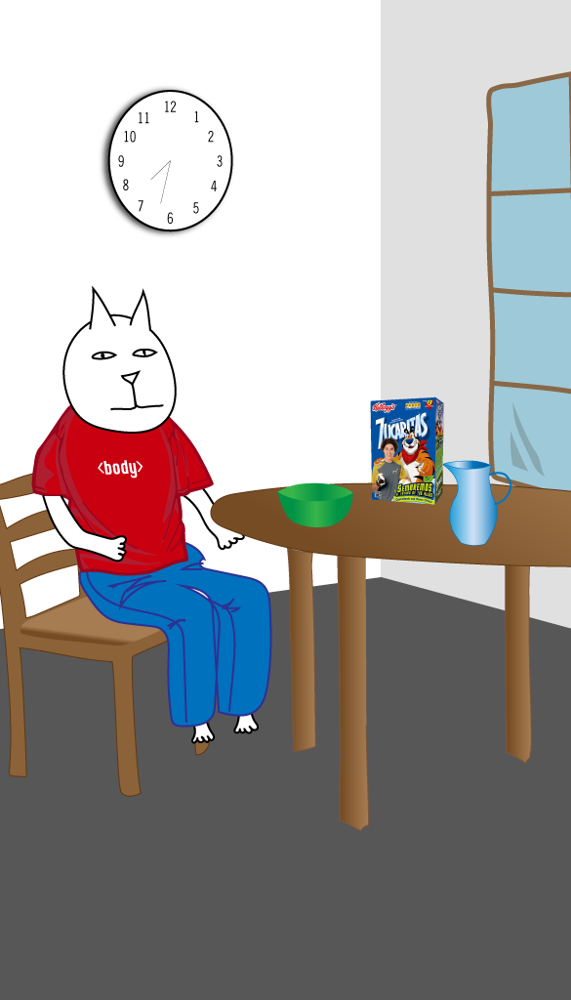

Karl the Cat woke up this morning feeling under the weather.

He would not be able to visit his friend, Tom, today. He felt down in the dumps.
Karl was bent out of shape when he called Tom to tell him he could not come to his house.
Tom decided to go to Karl’s house to cheer him up. When Karl opened the door, he was tickled pink to see Tom.
The two cats visited for most of the afternoon. Tom told Karl jokes and had him in stitches.
Suddenly they heard thunder. Tom raced home and got inside just before it started raining. This made him dog tired.
Karl felt much better and was pleased as punch to have such a good friend.
He had ants in his pants just thinking about all of the fun they would have tomorrow.